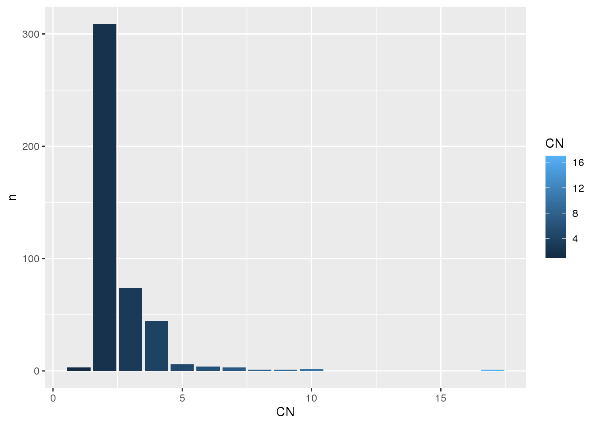

# Load packages
library(GAMBLR.data)
library(tidyverse)Tutorial: getting started
This is a quick tour of some basic commands and usage patterns, just to get you started.
This tutorial explores how to retrieve different data types bundled within GAMBLR.data. Commonly, GAMBLR functions are prefixed with get_. These functions are readily available for returning data of different types: Simple Somatic Mutations (SSM), Copy Number (CN) segments and Structural Variants (SV). This resource explores commonly occurring arguments across different functions, best-practices and recommendations in the scope of retrieving data.
How do I obtain metadata?
First, let’s start with retrieving metadata for all GAMBL samples. We can control which samples to be included in the output with seq_type_filter argument, which returns genome samples by default. To return metadata for capture samples, set seq_type_filter = "capture". It is also possible to return metadata for more than one seq type, e.g seq_type_filter = c("genome", "capture").
metadata <- list()
# Get gambl metadata for genome samples
metadata$genomes <- get_gambl_metadata(
seq_type_filter = "genome"
)
metadata$capture <- get_gambl_metadata(
seq_type_filter = "capture"
)
metadata$all <- get_gambl_metadata(
seq_type_filter = c("genome", "capture")
)Now that we have the metadata, we can look at the expected column names and their format:
str(metadata$all)'data.frame': 2740 obs. of 29 variables:
$ patient_id : chr "BLGSP-71-29-00539" "BLGSP-71-29-00525" "BLGSP-71-29-00528" "BLGSP-71-29-00526" ...
$ sample_id : chr "Akata" "BL2" "BL30" "BL41" ...
$ Tumor_Sample_Barcode: chr "Akata" "BL2" "BL30" "BL41" ...
$ seq_type : chr "genome" "genome" "genome" "genome" ...
$ sex : chr "NA" "NA" "NA" "NA" ...
$ COO_consensus : chr NA NA NA NA ...
$ lymphgen : chr "ST2" "Other" "Other" "Other" ...
$ genetic_subgroup : chr "DGG-BL" "DGG-BL" "IC-BL" "IC-BL" ...
$ EBV_status_inf : chr "EBV-positive" "EBV-negative" "EBV-negative" "EBV-negative" ...
$ cohort : chr "BL_Thomas" "BL_Thomas" "BL_Thomas" "BL_Thomas" ...
$ pathology : chr "BL" "BL" "BL" "BL" ...
$ reference_PMID : num 36201743 36201743 36201743 36201743 36201743 ...
$ genome_build : chr NA NA NA NA ...
$ pairing_status : chr NA NA NA NA ...
$ age_group : chr NA NA NA NA ...
$ compression : chr NA NA NA NA ...
$ bam_available : logi NA NA NA NA NA NA ...
$ pathology_rank : num NA NA NA NA NA NA NA NA NA NA ...
$ DHITsig_consensus : chr NA NA NA NA ...
$ ffpe_or_frozen : chr NA NA NA NA ...
$ fl_grade : chr NA NA NA NA ...
$ hiv_status : chr NA NA NA NA ...
$ lymphgen_cnv_noA53 : chr NA NA NA NA ...
$ lymphgen_no_cnv : chr NA NA NA NA ...
$ lymphgen_with_cnv : chr NA NA NA NA ...
$ lymphgen_wright : chr NA NA NA NA ...
$ molecular_BL : chr NA NA NA NA ...
$ normal_sample_id : chr NA NA NA NA ...
$ time_point : chr NA NA NA NA ...We can now use the metadata as we wish. For example, we can visualize the counts of samples per pathology and sequencing type:
# We can see what is included in the metadata
metadata$all %>%
count(pathology, seq_type) %>%
ggplot(
aes(
x = pathology,
y = n,
fill = pathology
)
) +
geom_bar(stat = "identity") +
facet_wrap(~seq_type) +
geom_text(aes(label=n), size=3.5)+
theme(
axis.text.x = element_text(
angle = 90,
vjust = 0.5,
hjust = 1
)
)
# We can also visualize these counts when subset to only DLBCL:
# Subset metadata on a set of samples (samples classified as DLBCL for pathology)
metadata$dlbcl <- metadata$all %>%
filter(pathology == "DLBCL")
metadata$dlbcl %>%
count(pathology, seq_type) %>%
ggplot(
aes(
x = pathology,
y = n,
fill = pathology
)
) +
geom_bar(stat = "identity") +
facet_wrap(~seq_type) +
geom_text(aes(label=n), size=3.5)+
theme(
axis.text.x = element_text(
angle = 90,
vjust = 0.5,
hjust = 1
)
)
How do I obtain SSM?
Based on the information available to you, your application, or your downstream analysis, there are multiple ways to retrieve SSM data. For example, if you know the sample ID and are only interested in looking at SSM results for that particular sample, you can use get_ssm_by_sample. If multiple samples are to be analyzed, get_ssm_by_samples (plural version) is recommended. You can also use patient IDs for retrieving this data, in this case get_ssm_by_patients is available. In addition, you can also restrict SSM calls to specific genomic regions with get_ssm_by_regions or get_ssm_by_region.
Another possibility is to focus on coding mutations only and call get_coding_ssm, this function returns all coding SSMs from the bundled data in maf-like format. If you have an already pre-filtered metadata, the these_samples_metadata argument can be used with all SSM functions to restrict the variants returned to the sample IDs in this data frame, handy!
By Samples
Return SSMs for one or more samples with get_ssm_by_samples. In the example below, we are requesting SSM for the DOHH-2 cell line in two different ways:
Using these_sample_ids
my_sample_id <- "DOHH-2"
# Using the these_samples_id argument
ssm_sample <- get_ssm_by_samples(these_sample_ids = my_sample_id)
# How many mutations do we get back?
dim(ssm_sample)[1] 22089 45# What columns are available?
colnames(ssm_sample) [1] "Hugo_Symbol" "Entrez_Gene_Id"
[3] "Center" "NCBI_Build"
[5] "Chromosome" "Start_Position"
[7] "End_Position" "Strand"
[9] "Variant_Classification" "Variant_Type"
[11] "Reference_Allele" "Tumor_Seq_Allele1"
[13] "Tumor_Seq_Allele2" "dbSNP_RS"
[15] "dbSNP_Val_Status" "Tumor_Sample_Barcode"
[17] "Matched_Norm_Sample_Barcode" "Match_Norm_Seq_Allele1"
[19] "Match_Norm_Seq_Allele2" "Tumor_Validation_Allele1"
[21] "Tumor_Validation_Allele2" "Match_Norm_Validation_Allele1"
[23] "Match_Norm_Validation_Allele2" "Verification_Status"
[25] "Validation_Status" "Mutation_Status"
[27] "Sequencing_Phase" "Sequence_Source"
[29] "Validation_Method" "Score"
[31] "BAM_File" "Sequencer"
[33] "Tumor_Sample_UUID" "Matched_Norm_Sample_UUID"
[35] "HGVSc" "HGVSp"
[37] "HGVSp_Short" "Transcript_ID"
[39] "Exon_Number" "t_depth"
[41] "t_ref_count" "t_alt_count"
[43] "n_depth" "n_ref_count"
[45] "n_alt_count" # What variants are available?
ssm_sample %>%
count(Variant_Classification) %>%
ggplot(
aes(
x = Variant_Classification,
y = n,
fill = Variant_Classification
)
) +
geom_bar(stat = "identity") +
geom_text(aes(label=n), size=3.5)+
theme(
axis.text.x = element_text(
angle = 90,
vjust = 0.5,
hjust = 1
)
)
Using these_samples_metadata
We can supply instead a metadata table that has already been subset to the sample ID(s) of interest.
metadata$dohh2 <- metadata$genome %>%
filter(sample_id == "DOHH-2")
# Using the these_samples_metadata argument
ssm_meta <- get_ssm_by_samples(
these_samples_metadata = metadata$dohh2
)
# How many mutations do we get back?
dim(ssm_meta)[1] 22089 45# What columns are available?
colnames(ssm_meta) [1] "Hugo_Symbol" "Entrez_Gene_Id"
[3] "Center" "NCBI_Build"
[5] "Chromosome" "Start_Position"
[7] "End_Position" "Strand"
[9] "Variant_Classification" "Variant_Type"
[11] "Reference_Allele" "Tumor_Seq_Allele1"
[13] "Tumor_Seq_Allele2" "dbSNP_RS"
[15] "dbSNP_Val_Status" "Tumor_Sample_Barcode"
[17] "Matched_Norm_Sample_Barcode" "Match_Norm_Seq_Allele1"
[19] "Match_Norm_Seq_Allele2" "Tumor_Validation_Allele1"
[21] "Tumor_Validation_Allele2" "Match_Norm_Validation_Allele1"
[23] "Match_Norm_Validation_Allele2" "Verification_Status"
[25] "Validation_Status" "Mutation_Status"
[27] "Sequencing_Phase" "Sequence_Source"
[29] "Validation_Method" "Score"
[31] "BAM_File" "Sequencer"
[33] "Tumor_Sample_UUID" "Matched_Norm_Sample_UUID"
[35] "HGVSc" "HGVSp"
[37] "HGVSp_Short" "Transcript_ID"
[39] "Exon_Number" "t_depth"
[41] "t_ref_count" "t_alt_count"
[43] "n_depth" "n_ref_count"
[45] "n_alt_count" # What variants are available?
ssm_meta %>%
count(Variant_Classification) %>%
ggplot(
aes(
x = Variant_Classification,
y = n,
fill = Variant_Classification
)
) +
geom_bar(stat = "identity") +
geom_text(aes(label=n), size=3.5) +
theme(
axis.text.x = element_text(
angle = 90,
vjust = 0.5,
hjust = 1
)
)
We can make sure that both approaches generate identical outputs:
identical(
ssm_sample,
ssm_meta
)[1] TRUEThus, there is no “right” or “wrong” way, it is simply your personal preference!
Using these_genes
Returning maf data for thousands or hundreds of files can potentially create memory or space issues when storing the Rsession if you are using old-day R editors like RStudio. To facilitate this, you can optionally request the SSM to be returned just for a small number of specific genes with the argument these_genes:
# Only look at specific gene(s)
my_genes <- c("MYC")
ssm_myc <- get_ssm_by_samples(
these_sample_ids = my_sample_id,
these_genes = my_genes
)
ssm_myc %>%
count(Hugo_Symbol) %>%
ggplot(
aes(
x = Hugo_Symbol,
y = n,
fill = Hugo_Symbol
)
) +
geom_bar(stat = "identity")
Using maf_col
Similarly, to decrease the burden of handling large maf data, it is also possible to dictate what maf columns we want back. To do this, call the function with the maf_col argument and provide a vector of the columns of interest. Here, we are requesting SSM calls for only a small set of columns. It is also important to note that this will require setting the argument basic_columns to FALSE, as this argument takes precedence over all other arguments that control output columns and returns first 45 columns of standard maf.
# Define the column names
my_columns <- c(
"Hugo_Symbol",
"Chromosome",
"Start_Position",
"End_Position",
"Tumor_Sample_Barcode",
"Variant_Classification"
)
# Since we don't provide any arguments that restrict to specific
# samples, we expect the return to contain data from all samples in the bundled
# data
ssm_col <- get_ssm_by_samples(
these_genes = my_genes,
maf_col = my_columns,
basic_columns = FALSE
)
# What are the dimensions for the capture SSM calls?
dim(ssm_col)[1] 4000 6# What are the columns in the output?
colnames(ssm_col)[1] "Hugo_Symbol" "Chromosome" "Start_Position"
[4] "End_Position" "Tumor_Sample_Barcode" "Variant_Classification"In a different projection
Often many downstream tools can only work on one specific genome build, and GAMBLR.data provides a simple and straightforward way to obtain variants in different projections. The default output is always with respect to grch37, and it can be easily modified with argument projection:
ssm_hg38 <- get_ssm_by_samples(
projection = "hg38"
)
# Sanity check the projection
ssm_hg38 %>%
count(NCBI_Build) %>%
ggplot(
aes(
x = NCBI_Build,
y = n,
fill = NCBI_Build
)
) +
geom_bar(stat = "identity") +
geom_text(aes(label=n), size=3.5)
As we did not specify any sample ID, metadata, or gene to the above call, it by default returned the data for all samples available in GAMBLR.data, and we can see from the plot that all of the variants are with respect to hg38. Sweet! 😎
By Region
In this section, we are exploring the different ways you can obtain the maf data for a specific region (or regions) of interest.
For multiple regions, refer to the get_ssm_by_regions. In this example, we will obtain SSM calls for all aSHM regions associated with PAX5 across all available samples. With this multiple-region-version of this function we also get the region name added to the returned data frame and there are a couple of different ways this can be done. If you are providing regions as a bed file (regions_bed), you have the option of setting use_name_column = TRUE. If you do so, your bed file should have a column simply named “name”. In this case, the function will keep this column for naming the returned regions in the maf. With streamlined = TRUE the function returns the minimal number of columns. Don’t know coordinates of aSHM at PAX5? GAMBLR.data has you covered!
# Get aSHM genes, select the columns of interest and rename for
# get_ssm_by_regions compatibility
ashm_gene <- "PAX5"
regions <- grch37_ashm_regions %>%
filter(gene == ashm_gene) %>%
rename(
chromosome = chr_name,
start = hg19_start,
end = hg19_end
) %>%
mutate(
name = paste0(gene, "_", region)
)
# Get ssm for all ashm regions
ashm_ssm <- get_ssm_by_regions(
regions_bed = regions,
use_name_column = TRUE,
streamlined = TRUE
)
head(ashm_ssm)# A tibble: 6 × 3
start sample_id region_name
<dbl> <chr> <chr>
1 37025887 01-20260T PAX5_intron-1
2 37024351 04-24937T PAX5_intron-1
3 37025246 04-24937T PAX5_intron-1
4 37025268 04-24937T PAX5_intron-1
5 37025300 04-24937T PAX5_intron-1
6 37025820 04-24937T PAX5_intron-1Using list of regions
You can instead specify regions as a vector of characters (regions_list) instead of using a bed file. In this case, the function will not accept a fourth element for naming the returned regions. If so, the function defaults to using the specified region as the name of the column in the output.
ssm_region_list <- get_ssm_by_regions(
regions_list = c(
"chr9:37023396-37027663",
"chr9:37029849-37037154",
"chr9:37369209-37372160"
),
streamlined = TRUE
)
head(ssm_region_list)# A tibble: 6 × 3
start sample_id region_name
<dbl> <chr> <chr>
1 37025887 01-20260T chr9:37023396-37027663
2 37024351 04-24937T chr9:37023396-37027663
3 37025246 04-24937T chr9:37023396-37027663
4 37025268 04-24937T chr9:37023396-37027663
5 37025300 04-24937T chr9:37023396-37027663
6 37025820 04-24937T chr9:37023396-37027663Coding SSM
Lastly, another way to retrieve SSM is to call get_coding_ssm. This function returns coding SSM for any given sample. This function is a convenient option for anyone interested in focusing only on coding mutations. Convenient filtering arguments are included in this function for easy and straightforward subsetting. If these arguments are not used, coding SSM will be returned for all samples. Of course, similar to the examples above, you can provide a metadata subset that has already been filtered to the sample IDs of interest (using these_samples_metadata).
# Limit_cohort
dlbcl_cell_lines <- get_coding_ssm(
limit_cohort = "DLBCL_cell_lines"
)
dim(dlbcl_cell_lines)[1] 1616 48Instead, we can just exclude a group of samples by using the exclude_cohort argument:
# Exclude_cohort
no_dlbcl_cell_lines <- get_coding_ssm(
exclude_cohort = "DLBCL_cell_lines"
)
dim(no_dlbcl_cell_lines)[1] 57230 48How do I obtain CNV?
For the purpose of retrieving CN data, we have two functions available: get_sample_cn_segments and get_sn_segments, each with its own specialized application and recommended usage. Briefly, get_sample_cn_segments is best called if you want to query CN segments for a specific subset of samples. This function works for singular as well as multiple samples. In addition, many arguments and their behavior might be already familiar to you from the previous section (such as this_seq_type, projection, these_sample_ids, and these_samples_metadata). If you instead want to query CN calls for a specific region or genomic loci, get_cn_segments is best used. In this section we will explore the two different functions and demonstrate how they can be used.
By Samples
get_sample_cn_segments returns CN segments in seg format for single sample or multiple samples. Specify the sample IDs you are interested in with these_sample_ids (as a vector of characters), or call this function with these_samples_metadata if you already have a metadata table subset to the sample IDs of interest. If none of the above arguments are specified, the function will return CN segments for available samples (from get_gambl_metadata) - a behaviour consistent with other functions of the get_ GAMBLR family. As some downstream tools do not allow for missing segments in the CN data for proper functioning, this is already handled for you when obtaining CN data. The “bald spots” where CN callers did not report any variants are filled in with empty segments of diploid state, and extend through the whole chromosome arm, omitting centromeres.
Default behaviour
To begin, let’s call get_sample_cn_segments with default arguments. This returns all available CN information from the bundled data. Consistent with other functions of the get_ GAMBLR family, the default seq_type is always set to genome and default projection set to grch37.
seg <- get_sample_cn_segments()
# What are the columns we have available?
head(seg)# A tibble: 6 × 7
ID chrom start end LOH_flag log.ratio CN
<chr> <chr> <dbl> <dbl> <dbl> <dbl> <dbl>
1 02-13135T 1 10001 762600 0 0 2
2 02-13135T 1 762601 121500000 0 0 2
3 02-13135T 1 142600000 161506889 0 0 2
4 02-13135T 1 161506890 161652716 0 0 2
5 02-13135T 1 161652717 162110568 0 0.728 3
6 02-13135T 1 162110569 162111399 0 0 2Using these_sample_ids
Now, let’s explore some of the other arguments we have available. In this example, we are calling the function specifying these_sample_ids to obtain CN data for a sample of interest.
# Use these_sample_ids
sample_dohh2_seg <- get_sample_cn_segments(
these_sample_ids = my_sample_id
)
head(sample_dohh2_seg)# A tibble: 6 × 7
ID chrom start end LOH_flag log.ratio CN
<chr> <chr> <dbl> <dbl> <dbl> <dbl> <dbl>
1 DOHH-2 1 10001 86026719 0 0 2
2 DOHH-2 1 86026720 86688464 1 0 2
3 DOHH-2 1 86688465 121499999 0 0 2
4 DOHH-2 1 142600001 249250620 0 0 2
5 DOHH-2 2 10001 89087285 0 0 2
6 DOHH-2 2 89087286 89997184 1 -10 0Using these_samples_metadata
We can also use metadata restricted to the sample ID of interest to demonstrate that either of these arguments will return the same data, as long as they have the same sample ID.
# Use these_samples_metadata
meta_dohh2_seg <- get_sample_cn_segments(
these_samples_metadata = metadata$dohh2
)
# Are they the same?
identical(
sample_dohh2_seg,
meta_dohh2_seg
)[1] TRUEIn a different projection
We can retrieve CN segments while also requesting a different projection. Similar to the SSM functionality shown earlier, this can be done by toggling the projection argument and switching it to the hg38 value.
# Call get_sample_cn_segments
dlbcl_samples_seg <- get_sample_cn_segments(
these_sample_ids = metadata$dlbcl$sample_id,
projection = "hg38"
)
head(dlbcl_samples_seg)# A tibble: 6 × 7
ID chrom start end LOH_flag log.ratio CN
<chr> <chr> <dbl> <dbl> <dbl> <dbl> <dbl>
1 HTMCP-01-01-00003-01D-03D 1 10001 832872 NA 0 2
2 HTMCP-01-01-00003-01D-03D 1 832873 23215653 NA 0 2
3 HTMCP-01-01-00003-01D-03D 1 23215654 23216813 NA 0 2
4 HTMCP-01-01-00003-01D-03D 1 23216814 23789186 NA -0.731 1
5 HTMCP-01-01-00003-01D-03D 1 23789187 23795110 NA 0 2
6 HTMCP-01-01-00003-01D-03D 1 23795111 121608415 NA 0 2dlbcl_meta_seg <- get_sample_cn_segments(
these_samples_metadata = metadata$dlbcl,
projection = "hg38"
)
# Are they the same?
identical(dlbcl_samples_seg, dlbcl_meta_seg)[1] TRUEBy Region
get_cn_segments behaves very similar to get_sample_cn_segments with the difference that you can specify one or more genomic loci to restrict the returned CN segments to. In order to achieve this, the function has the following additional arguments available; region, chromosome, qstart, and qend. You can provide the full region in a “region” format (chr:start-end) to the region argument. Alternatively, you can provide chromosome, start, and end coordinates individually with chr, qstart, and qend arguments.
Use region
Here we are showing how to give the function a complete region with the region argument. Similar to get_sample_cn_segments, if these_sample_ids and/or these_samples_metadata are not specified, the function will query all available samples.
# MYC region (grch37)
myc_region <- "8:128747680-128753674"
# Get cn segments in this region for all samples
myc_seg <- get_cn_segments(
region = myc_region
)
# What are the CN states in this region for the selected samples?
myc_seg %>%
count(CN) %>%
ggplot(
aes(
x = CN,
y = n,
fill = CN
)
) +
geom_bar(stat = "identity")
Specify individual chunks
Here we specify the region of interest with the chromosome, qstart, and qend arguments. As a quick check, we are also comparing the returned data frame with what we get when specifying the same region with the region argument to ensure they are identical.
myc_chunks_seg <- get_cn_segments(
chromosome = 8,
qstart = 128747680,
qend = 128753674
)
# Does this return match what we get when specifying the same genomic range
# with `range` in the previous example?
identical(
myc_seg,
myc_chunks_seg
)[1] TRUEYes, indeed - the both ways of returning the CN data for a given region produce identical outputs.
How do I obtain SV?
In this last section, we will explore how to get SV data using GAMBLR.data. For this purpose get_manta_sv was developed. Similar to the previously described SSM and CNV functionalities, this function can also restrict the returned calls to any genomic regions specified with chromosome, qstart, qend, or the complete region specified with the region argument (in chr:start-end format). In addition, useful filtering arguments are also available, use min_vaf to set the minimum tumour VAF in order for a SV to be returned and min_score to set the lowest Manta somatic score in order for a SV to be returned. pair_status can be used to obtain variants from either matched or unmatched samples. In addition, you can chose to obtain all variants, even the ones not passing the filter criteria. To do so, set pass = FALSE (default is TRUE).
By Samples
This function also operates on the same set of familiar arguments as the family of get_ functions in GAMBLR. For example, to obtain SV calls for multiple samples, give these_sample_ids a vector of sample IDs. It will return the identical output as when the subsetting is done using these_samples_metadata. When none of this is specified, the returned output contains SVs for all samples available.
Default behaviour
We will call get_manta_sv with default arguments to examine the output.
# Default arguments
all_manta <- get_manta_sv()
# How many SVs do we get back?
nrow(all_manta)[1] 1154# How many samples do we have SV calls for?
length(unique(all_manta$tumour_sample_id))[1] 580# What does the returned data frame look like?
head(all_manta) CHROM_A START_A END_A CHROM_B START_B END_B
1 1 161658631 161658631 3 16509907 16509907
2 1 161663959 161663959 9 37363320 37363320
3 1 161663959 161663959 9 37363320 37363320
4 11 65267283 65267283 14 106110907 106110907
5 11 65267422 65267422 14 106110905 106110905
6 13 91976545 91976545 14 106211857 106211857
manta_name SCORE STRAND_A STRAND_B tumour_sample_id
1 MantaBND:21171:0:1:0:0:0 133 + + FL2002T1
2 MantaBND:206628:0:1:0:0:0 122 + + 09-15842_tumorA
3 MantaBND:195941:0:1:0:0:0 151 + + 09-15842_tumorB
4 MantaBND:152220:0:1:0:0:0:0 88 + - 15-38154T
5 MantaBND:152220:0:1:0:0:0:0 135 - + 15-38154T
6 MantaBND:18:59794:59817:0:1:0 90 - + 15-31924T
normal_sample_id VAF_tumour DP pair_status FILTER
1 FL2002N 0.331 127 matched PASS
2 09-15842_normal 0.281 196 matched PASS
3 09-15842_normal 0.364 187 matched PASS
4 15-38154N 0.150 167 matched PASS
5 15-38154N 0.290 169 matched PASS
6 15-31924N 0.365 85 matched PASSUsing these_sample_ids
Here we are demonstrating the sample ID subset option.
# Use these_sample_ids
sample_dohh2_manta <- get_manta_sv(
these_sample_ids = my_sample_id
)
head(sample_dohh2_manta) CHROM_A START_A END_A CHROM_B START_B END_B
1 14 106329465 106329465 18 60793497 60793497
2 14 106379091 106379091 18 60793492 60793492
3 8 128748200 128748200 14 106114286 106114286
4 8 128748204 128748205 14 106114282 106114283
manta_name SCORE STRAND_A STRAND_B tumour_sample_id
1 MantaBND:194451:1:2:0:0:0 103 + - DOHH-2
2 MantaBND:194451:0:1:0:0:0 91 - + DOHH-2
3 MantaBND:135279:0:1:0:0:0:0 84 + - DOHH-2
4 MantaBND:135279:0:1:0:0:0:0 83 - + DOHH-2
normal_sample_id VAF_tumour DP pair_status FILTER
1 14-11247N 0.29 69 unmatched PASS
2 14-11247N 0.30 60 unmatched PASS
3 14-11247N 0.70 20 unmatched PASS
4 14-11247N 0.65 20 unmatched PASSUsing these_samples_metadatasample
Alternatively, you can also provide these_samples_metadata argument to make use of a pre-filtered metadata table. In this case, the returned SVs will be restricted to the sample_ids within the data frame.
meta_dohh2_manta <- get_manta_sv(
these_samples_metadata = metadata$dohh2
)
# Are they the same?
identical(
sample_dohh2_manta,
meta_dohh2_manta
)[1] TRUEBy Region
We can call get_manta_sv specifying the region of interest first in the region format and then with specifying the chromosome, start and end individually.
# Specifying MYC in region format
dohh2_myc_manta_region <- get_manta_sv(
these_sample_ids = my_sample_id,
region = myc_region,
min_vaf = 0,
min_score = 0,
pass = FALSE
)
# Specifying MYC with chromosome, qstart and qend arguments
dohh2_myc_manta_chunks <- get_manta_sv(
these_samples_metadata = metadata$dohh2,
chromosome = 8,
qstart = 128747680,
qend = 128753674,
min_vaf = 0,
min_score = 0,
pass = FALSE
)
# Are the returned data frames the same?
identical(
dohh2_myc_manta_region,
dohh2_myc_manta_chunks
)[1] TRUESV filtering
Here we are demonstrating the filtering options to obtain SVs. In this example, we are calling get_manta_sv on the DLBCL metadata subset. For demonstration purposes, we are also requesting a non-default projection and adding some more filtering.
# Get manta SVs for the samples with DLBCL pathology
dlbcl_manta <- get_manta_sv(
these_samples_metadata = metadata$dlbcl,
projection = "hg38",
min_vaf = 0.4,
min_score = 100
)
# How many variants do we get back with these filters?
nrow(dlbcl_manta)[1] 65# Does the advertised VAF filters work?
all(dlbcl_manta$VAF_tumour >= 0.4)[1] TRUE# Do the advertised SCORE filter work?
all(dlbcl_manta$SCORE >= 100)[1] TRUE